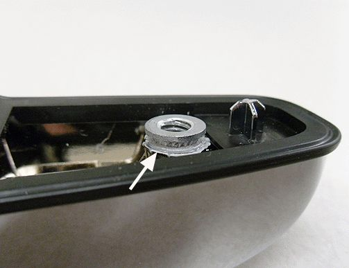

Body - Chrome Outside Door Handle Loose/Cracked
TECHNICALBulletin No.: 09-08-64-032A
Date: April 18, 2011
Subject: Chrome Outside Door Handle Loose/Cracked at Attachment Screw (Replace Handle)
Models:
2007-2011 Cadillac Escalade, Escalade ESV, Escalade EXT
2007-2011 Chevrolet Avalanche, Silverado, Suburban, Tahoe
2007-2011 GMC Sierra, Yukon, Yukon XL, Yukon Denali, Yukon Denali XL
Supercede:
This bulletin is being revised to add model years, update the Parts Information and add a Caution. Please discard Corporate Bulletin Number 09-08-64-032 (Section 08 - Body and Accessories).
Condition
Some customers may comment that a chrome outside door handle is loose or cracked in the area of the attachment screws.
Cause
For 2007 and 2008 models, this condition may be caused by grease used on the attachment screws during the assembly process, which can migrate into the handle screw bosses and cause degradation. Among other contributing factors to this condition is that the initial assembly torque of the attachment screws was too high, which may have helped initiate cracks in the screw bosses.
Correction
Important
When replacing a chrome outside door handle for this condition, be sure to address the following:
- Ensure that the attachment screws are free from grease before installing the new handle. Clean the screws with Kent Automotive Acrysol(TM) P/N 20005, or an equivalent grease removing body solvent.
- Torque the screws to 6 Nm (53 lb in).

Caution
Exceeding the recommended screw torque of 6 Nm (53 lb in) could result in the thread insert pulling out of the handle base, as shown in the graphic above.
Replace the affected chrome outside door handle. Refer to Front Side Door Outside Handle Replacement, Rear Side Door Outside Handle Replacement, or Rear Side Door Outside Handle Replacement (Crew Cab) in SI.
Parts Information
Acrysol(TM) is available from Kent Automotive at 1-888-YES-KENT or online at www.kent-automotive.com.
Warranty Information
For vehicles repaired under warranty, use the appropriate labor operation found in the Labor Time Guide (LTG).

Disclaimer